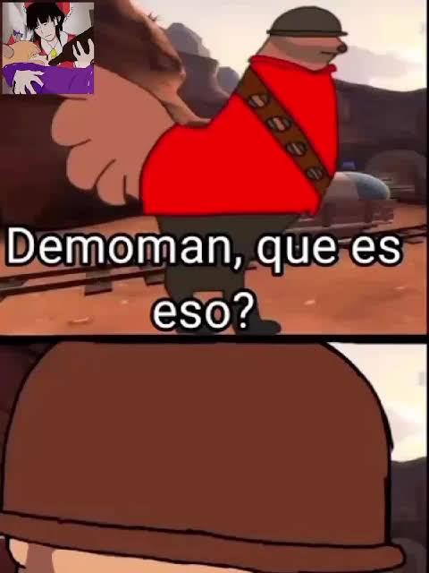

Scout
Rápido, ágil y difícil de alcanzar. Especialista en movilidad.
Nueve clases. Dos equipos. Una cantidad absurda de explosiones, estrategias y caos. Bienvenido al campo de batalla.
CONOCE LAS CLASES →
Team Fortress 2 es un videojuego multijugador
de disparos en primera persona desarrollado
por Valve. Lanzado en 2007, enfrenta a dos
organizaciones rivales: RED y BLU.
Cada jugador puede elegir entre nueve clases
diferentes, cada una con habilidades, armas
y estilos de juego únicos.
Choose your class, mercenary.
Rápido, ágil y difícil de alcanzar. Especialista en movilidad.
Un combatiente con lanzacohetes y una actitud explosiva.
Una figura misteriosa equipada con un lanzallamas.
Experto en explosivos, trampas y destrucción.
Fuerza bruta, mucha resistencia y una enorme minigun.
Construye centinelas, dispensadores y teleportadores.
El médico del equipo. Cura a sus compañeros y puede activar la ÜberCarga.
Precisión, paciencia y disparos desde largas distancias.
Infiltración, disfraces e invisibilidad. Cuidado con tu espalda.
"Ze healing is not as rewarding as ze hurting."
El Medic es la clase de apoyo especializada
en mantener vivos a sus compañeros.
Con su Medi Gun puede curar a los aliados
y cargar una ÜberCarga que proporciona
invulnerabilidad temporal.
¡Un equipo sin médico tiene un problema!
MEDIGUN READY.
HEALING: 100%
Official collection of questionable mercenary humor.

Filed by: RED Team

Filed by: BLU Team

Filed by: Mann Co.
Mercenary entertainment.
Highly questionable footage.